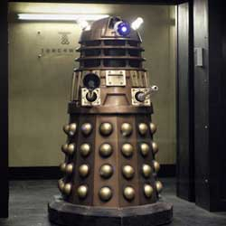

|
| Home The Doctors The Companions The Villians Show History |
The DaleksThe Dalek race, which first appeared in the show's second serial in 1963,[100] are Doctor Who 's oldest villains. The Daleks were Kaleds from the planet Skaro, mutated by the scientist Davros and housed in tank-like mechanical armour shells for mobility. The actual creatures resemble octopuses with large, pronounced brains. Their armour shells contain a single eye-stalk to allow them vision, a sink-plunger-like device that serves the purpose of a hand, and a directed-energy weapon. Their main weakness is their eyestalk; most attacks on them, including those from guns and baseball bats, will blind them, making them go mad. Their chief role in the plot of the series, as they frequently remark in their instantly recognisable metallic voices, is to "exterminate" all non-Dalek beings, even attacking the Time Lords in the Time War, which was not shown until the 50th Anniversary celebrating the show, where some snippets of the Time War are shown. The Daleks' most recent appearance was in the 2014 episode "Into the Dalek". They continue to be a recurring 'monster' within the Doctor Who franchise. Davros himself has also been a recurring figure since his debut in Genesis of the Daleks, although played by several different actors. The Daleks were created by writer Terry Nation (who intended them to be an allegory of the Nazis)[101] and BBC designer Raymond Cusick.[102] The Daleks' début in the programme's second serial, The Daleks(1963–64), made both the Daleks and Doctor Who very popular. A Dalek appeared on a postage stamp celebrating British popular culture in 1999, photographed by Lord Snowdon. In the new series, Daleks come in a range of colours; the colour of a Dalek denotes its role within the species.[citation needed] In the 2012 episode "Asylum of the Daleks", every generation of the Dalek species made an appearance. |
|
Madeleine Schwartz Ann Marie Skjold |
Content derived from Dr. Who Wikipedia.
|